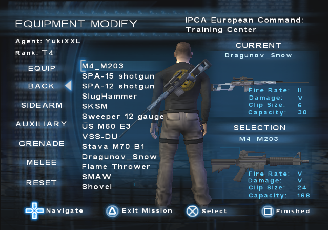
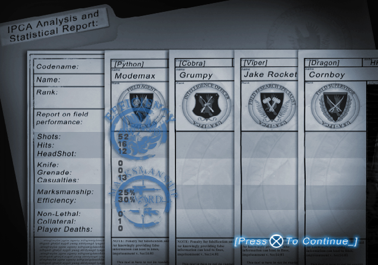

DISCLAIMER!
I am not responsible for any damage (corrupted saves, corrupted memory cards, etc.).
Codes listed here are not 100 % tested and not all codes listed here are available/ported in other PNACH's due to lack of time.
INFORMATION
In this section, I will be only explaining what cheat codes do. The codes are available in .pnach files for use with PCSX2 Emulator.
Cheat codes need to be renamed into (GAME_CRC).pnach. PCSX2 can read multiple .pnach files of the same CRC and with line added so you can have multiple .pnach's in the same game. To do it, simply add a line at the end (ex. CRC-something.pnach).
Guide for using PNACH
If you need the cheat codes in RAW format, simply do these steps:
1. Use "Find and Replace" to replace the lines "patch=1,EE," with "" (aka. NOTHING).
2. Repeat for the lines "//".
3. Replace the lines ",extended," with " " (aka. SPACEBAR).
If you want to convert the codes into format of your Cheat Device (Action Replay, Codebreaker, Gameshark, etc.), you will need the Omniconvert app.
If you wish to download the PNACH but it constantly opens as the text file, use the "Right Click > Save Link As ..." trick.
CRC List
- Final Release (NTSC-U) = D5605611.pnach
- Final Release (PAL-E) = 27E54B37.pnach
- Final Release (NTSC-K) = 3676E74C.pnach
- Public Beta 1 (NTSC-U) = C909A32E.pnach
- Public Beta 2 (PAL-E) = 0DDA2728.pnach
- Individual Demo (NTSC-U) = D91F8506.pnach
- November Demo (NTSC-U) = BFCE8450.pnach
- Jampack Demo (Custom ISO) (NTSC-U) = 2FFA7E6F.pnach
- Jampack Winter 2003 (Mature) (NTSC-U) = 7656425F.pnach
- Prototype Review Code Mar 6 2004 (NTSC-U) = 062BC79E.pnach
100 % (T4)
Here are the codes for getting T4 with minimal effort. All that is needed is to create or load an agent and get into Command Center and save (either by quitting while in mission or modifying the agent).
Available PNACHs
Final Release (NTSC-U)
Final Release (PAL-E)
Final Release (NTSC-K)
Public Beta 1 (NTSC-U)
Public Beta 2 (PAL-E)
November Demo (NTSC-U)
Individual Demo (NTSC-U)
Jampack Demo (Custom-ISO) (NTSC-U)
Codes Explanation
(Exclusive to Individual and Jampack Demo): BOOT FRONTEND
It enables booting into main menu.
Open Levels
Gives access to all levels.

Play once for all objectives
Completes all objectives.
Ratings
Makes Headshots, Knife, Grenades, Non-Lethal, Kills ratings have 1312. Reason for making it 1312 is because the Kills Rating requiers big amount of kills and there is only one function in the game's code which loops and reads all 5. The game uses dynamic memory to write where those ratings are actually stored for the agent and this way the cheat code can be also used in modded ISOs.
JAMPACK DEMO: Due to not having Dossier, the Ratings are temporary. Like "Open Levels".
All Solo Pars; All Team Pars; All Missions, No Collateral; All Missions, No Deaths
All par times are written with -10 seconds mark on lowest par (Carthage Mall). The reason for writting the same time is the same reason as for "Ratings".
Collateral and Deaths on all missions is ZERO.
All Missions Online
SPECIAL THANKS TO EVERYONE WHO HELPED ME TEST THIS!
Training Mission with 4 agents? Maybe Minsk and Lorelei which look like they are build for online (SPOILER: They are.)?
WARNING !
Bonus and other solo-only missions are broken due to missing scripts for multiplayer and who-knows-what. I have made a research on them and created a detailed text about all things that are broken so you might wan't to check them out first.
Solo Missions Online Info text
Available PNACHs
Final Release (NTSC-U)
Final Release (PAL-E)
Final Release (NTSC-K)
November Demo (NTSC-U)
Codes Explanation
DNAS Bypass
Bypasses DNAS check and let's you get online faster. RECOMMENDED!
All missions online
Enables all missions for online mode (except Training).
Alternative version of the code was kept for future references. Use it if the main one doesn't work.
Lobby IDs fix
Every level (mission) has a Lobby ID. All missions that usually aren't online have Lobby ID -1. The game is only able to create a lobby with ID 9 or lower (since there are 9 online levels). This lines of codes changes the -1 IDs for the rest of the missions (except Training) to some that other levels use.
This means when some game is hosted, it will also show up in other mission lobby. Example: if Italy is hosted, the game will also show up in Carthage Warehouse but you won't be able to join it.
Own agent on Bonus missions, Enable equiping weapons on Bonus missions
Usually you aren't allowed to have your own agent on Bonus Missions or equip your own weapons but this codes make it possible so that online could be more fun.
If you skip the code, this is what you'll see for each agent idividually:
Bypass the OnlineIndextoLevel checking
The game checks twice if Lobby ID equals the Level ID that is written to be for online only. I don't know what's the reason for it but it only takes 2 lines of code for each check. All that now checks is if Level ID is equal to Level ID.
Training Mission enabled
Great. Now you also have the Training Center enabled.
Lobby ID fix
Fixes Lobby ID for the Training Center.
Bypass Level ID check
The game checks if selected Level ID is lower than 17 and Training ID is 23. If it fails, it doesn't allow to join the mission. Now it checks if it's lower than 24.
Training Level ID fix
The actual Training Center ID is 17. But the it's selection ID is 23. But it's also Level ID... I don't know how it works. Ask the developers. I am only here to make a check code that changes the ID from 23 to 17 once you press to join or create the mission so that it doesn't crash and so that you can see the games.
Anyway, here are the IDs references (SP Lobby IDs are IDs for usually non-available online missions):

Dual Wield Mod
Dual wield other weapons aside from sidearms. Dual miniguns maybe?
Available PNACHs
Final Release (NTSC-U)
Final Release (PAL-E)
Final Release (NTSC-K)
Instructions
Launch any mission. When in the Equipment Modify, go to Sidearms, quit and re-launch the mission for changes to apply.
Codes Explanation
Open weapons (NEEDED!)
Enables all weapons. This is needed in order to write the sidearm slot for all weapons. This includes enemies weapons so those can be also dual wielded.

Back, Auxiliary weapons save as sidearm
Soon as you go to Sidearms, it saves sidearm slot for back and auxiliary weapons.

Back = Goggles
Since all Back weapons are in sidearm and instead of leaving the option empty, you can equip goggles instead.
Auxiliary = Flashlight
Same as above but for P.I.D in Auxiliary.
Animation change for all weapons
This changes holding animation so you hold weapons as dual sidearms.
Dual Wield Ability enabled
In case you don't have the dual wield ability unlocked. This enables it.
Show goggles and P.I.D in Equip
The Equip option doesn't usually show goggles and P.I.D but since you can equip/unequip them, now you can see if you have them equipped or not.

OLD CODES (ARCHIVED)
This codes were kept for future reference. Not used due to a bug of not being able to use P.I.D (Flashlight), Goggles, Grenades or Meele.
Dual Wield any weapon
All weapons under sidearm (Equipment Modify)
Shows all weapons (equipment) in sidearms slot.
All weapons in sidearm weapon slot
Makes all weapons be in sidearm weapon slot.
Codenames Offline
Play as Python, Viper or Dragon offline.
Available PNACHs
Final Release (NTSC-U)
Final Release (PAL-E)
Final Release (NTSC-K)
Instructions
When in Command Center, select "Join Mission" when going to play the mission:
MAX AGENTS - Codename: 0 = None (Default); 1 = Cobra; 2 = Python; 3 = Viper; 4 = Dragon.
JOIN FILTER - Setting this to anything else than "None" activates Online-like experience.
Once the desired settings are selected, select "BEGIN MISSION" or press SQUARE. Nothing will seem to happen but the changes applied. Now go back and select "Play Mission" and enjoy.
This only needs to be done once and changes remain applied permanently until they are changed again through "Join Mission" menu.
Codes Explanation
Menu codes
Join Mission button
Enables "Join Mission" button when selecting the mission.
Join Mission is Create Mission
Makes "Join Mission" act as "Create Mission".
Enable Mission Setup & Join Mission offline
Bypasses the check that checks if connection is established so that "Mission Setup" and "Join Mission" menus can open when offline.
Join any mission
Enables joining any mission (except for Training).
Join Training Center
Enables joining Training Center.
Begin Mission fix codes
Write codename and join filter
When "Begin Mission" or SQUARE is pressed: Reads the "Number of agents" and writes the codename and reads the join filter and writes to "m_bIsMultiplayer" (Online-like experience).
Min num agents = 0
Makes minimum amount of selectable agents ZERO.
Gameplay codes
Enable online objectives + dialogues
If Online-like experience is enabled: Enables online (team) objectives like "Rescue all workers" in Krivorozhstal Mill and Stone speech about getting another agent in Belaya Vezha.
Team Par
If Online-like experience is enabled: Writes Team Par.
Check if completed Par
If Online-like experience is enabled: Checks if Team Par is already completed and writes if the time is faster.
Checking Team objectives
If Online-like experience is enabled: Checks if Team objectives are also completed before writing a Team Par. Disabled by default since it would make it too hard to get Team Par solo.
Write Par if all objectives completed
If Online-like experience is enabled: Writes Team Par if all objectives completed. If above code is disabled, it doesn't check the Team ones.
Buddy Climb
Enables Team interactions (Buddy Climb).
Animation Change
Changes the interact animation so that you don't wait for another agent and your agent just jumps.
\/ Codename stuff \/
Menu codes
Stats
Displays proper codename on Statistics screen.
Gameplay codes
Quickchat enabled
If Online-like experience is enabled: Enables Quickchat usage.
fix for showing codename
Makes the proper codename show when using Quickchat.
Radio comms
Makes a proper codename be spoken when dying.
Show codename on the right
If Online-like experience is enabled: Enables codename text showing above the weapon HUD.
Minimap fix
Makes a proper codename appear when using minimap (LEFT D-PAD).
End mission codes
Load the codename
Loads the codename for the next 3 codes that are used for voice comms.
(Codename)
Just sas your codename.
(Codename) managed to not get killed
"Cobra/Python/Viper/Dragon managed to not get killed". I think this is pretty obvious where it's used.
(Codename) collateral
When killing collateral targets.
Offline Preservation Mod
Resotration of online menus and other things for offline.
Available PNACHs
Final Release (NTSC-U)
Final Release (PAL-E)
Final Release (NTSC-K)
Public Beta 1 (NTSC-U)
Public Beta 2 (PAL-E)
November Demo (NTSC-U)
Instructions
After loading the agent, select the online option.
Codes Explanation
Menu codes
Enable Online lobby in offline
When Online option is selected, drops to Command Center instead of trying to connect online. Also contains a code which throws the player back to Command Center after the mission is over, otherwise "disconnect" message appears and the player is dropped back to "Play Select" screen.
OPTIONAL! All levels available in online mode
Enables all missions for online mode
Enable Mission Setup & Join Mission offline
Bypasses the check that checks if connection is established so that "Mission Setup" and "Join Mission" menus can open when offline.
Host Game fix
Bypasses the check that checks if connection is established so that the "Host Game" option in "Join Mission" screen works when offline.
Join any mission
Enables joining any mission (except for Training).
Join Training Center
Enables joining Training Center.
OPTIONAL! Pick Region crash fix
When "Pick Region" option is selected, the game is looking for a file that contains the regions. Usually when it fails it drops and error on retrieving the regions. But in this case, it drops bunch of "TLB misses" in the emulator which crash on real hardware. This is optional if the player never chooses to use the option.
Begin Mission fix codes
Write codename
When "Begin Mission" or SQUARE is pressed: Reads the "Number of agents" and writes the codename.
SuccessLobbyConnect
Jumps to "SuccessLobbyConnect" function so that the mission can start.
Somekind of error fix
When starting the game the second time, emulator reports "TLB misses" which crash the game on real hardware. This fixes it.
Online, Offline enabler
Enables online-like experience. In details: it writes byte 0x01 into "FakeByte" adress instead of "m_bIsMultiplayer" which is used in later codes. Writing it into "m_bIsMultiplayer" would crash the game or make it unplayable.
Min num agents = 1
Makes minimum amount of selectable agents ONE. This is made so that codename "Cobra" can be selected.
Gameplay codes
Enable online objectives + dialogues
Enables online (team) objectives like "Rescue all workers" in Krivorozhstal Mill and Stone speech about getting another agent in Belaya Vezha.
Team Par
Writes Team Par.
Check if completed Par
Checks if Team Par is already completed and writes if the time is faster.
Checking Team objectives
Checks if Team objectives are also completed before writing a Team Par. Disabled by default since it would make it too hard to get Team Par solo.
Write Par if all objectives completed
Writes Team Par if all objectives completed. If above code is disabled, it doesn't check the Team ones.
Buddy Climb
Enables Team interactions (Buddy Climb).
Animation Change
Changes the interact animation so that you don't wait for another agent and your agent just jumps.
OPTIONAL! Skin based on codename (Bonus missions "online")
On Bonus missions, it uses the skins that are used by Default (PC_MALE.SKL, PC_FEMALE.SKL). Check the reference picture below:
\/ Codename stuff \/
Online controller
This controls EVERYTHING related to online mode.
Mission end fix
Fixes the infinite black screen after mission has ended. Not needed anymore but kept for future reference or when needed again.
Menu codes
Equipment setup codes
- Beginning at it
When the mission is loaded, it opens the Equipment Setup screen. This is needed to avoid crashes.
- After pressing square or triangle
When in Equipment Modify, after pressing SQUARE or TRIANGLE, it drops the player back into Equipment Setup.
Stats
Displays online-like Statistics screen.
NOVEMBER DEMO EXCLUSIVE!
Position fix
Fixes the position of the agent.

Fixes codes
Belarus 2 C4 stacks bug fix
On Belaya Vezha, when C4 stacks are reached, the player falls through the floor and constantly dies in the void even after respawning. A lot of "TLB misses" happen which crash on real hardware so this fixes the problem.
START button
Makes the START option act as in online. Used to avoid crashes.
START fix
It allows to start the mission without the countdown.
OPTIONAL! USE ONLY IF "START fix" CODE ISN'T ENABLED!
EQS CountDown codes
- Fake Word for EQS
Usually when mission is being created, it goes through bunch of checks and finally writes a 4-byte word for the countdown. Since it is skipped using "SuccessLobbyConnect", this uses a fake value.
- Load the fake word
Loads the fake value that the previous code wrote.
Show timer instead of "WAITING FOR HOST"
Shows the countdown instead of "WAITING FOR HOST".
PUBLIC BETA 1 EXCLUSIVE!
EQS CountDown
Displays "WAITING FOR HOST". It is used alongside "START fix" due to problems with "EQS CountDown codes" which are listed here.
OPTIONAL! Show timer and count in Equipment Modify
Shows the countdown in Equipment Modify.
Quit fix
When the mission is over, the game crashes. This fixes it.
Gameplay codes
Quickchat enabled
Enables Quickchat usage.
fix for showing codename
Makes the proper codename show when using Quickchat.
Radio comms
Makes a proper codename be spoken when dying.
Out of time (Team)
Special online-only radio comms dialogue when half-time of the Team Par is reached.
Show codename on the right
If Online-like experience is enabled: Enables codename text showing above the weapon HUD.
Minimap fix
Makes a proper codename appear when using minimap (LEFT D-PAD).
Codename spelling and dependecies
Needed for displaying the codename on minimap, statistics and for radio comms stuff.
End mission codes
Marks and Eff award
Teresa lines for Marksmanship and Efficiency rewards.
(Codename) managed to not get killed
"Cobra/Python/Viper/Dragon managed to not get killed". I think this is pretty obvious where it's used.
Medals and stuff
"Cobra/Python/Viper/Dragon earned Medal/Commendation/Rating.". I think this is pretty obvious where it's used.
Fixes and Widescreen Patches
Codes that contain fixes to make a game playable and Widescreen codes for 16:9 aspect ratio experience.
Available PNACHs
Final Release (NTSC-U)
Final Release (PAL-E)
Final Release (NTSC-K)
Public Beta 1 (NTSC-U)
Public Beta 2 (PAL-E)
Prototype Review Code (Mar 6, 2004) (NTSC-U)
November Demo (NTSC-U)
Codes Explanation
NOVEMBER DEMO AND PROTOTYPE EXCLUSIVE!
Dongle protection bypass
Bypasses dongle protection so the game can start-up.
PUBLIC BETA 1/2 EXCLUSIVE!
Offline button
Enables the offline option in "Play Select" which is normally disabled and the game is online-only. In details: it writes byte 0x00 to "gONLINE_ONLY" adress.
Flashlight and Night Vision fix
Fixes the flashlight and night vision issues on emulator (COP2 problems).
gameplay
Makes gameplay elements such as models in 16:9 aspect ratio.
HUD fix
Makes HUD elements in 16:9 aspect ratio.
FMV's fix
Zooms-in on movies/cutscenes so that they are not stretched.
NTSC-U AND PROTOTYPE REVIEW CODE EXCLUSIVE!
Other languages SNDVAG fix
Makes other language sound files usable. Not really needed in NTSC-U and in Prototype Review Code, the used language can only be changed through modding.
Miscellaneous
Bunch of random codes. You may like what you find here.
Available PNACHs
Final Release (NTSC-U)
Final Release (PAL-E)
Final Release (NTSC-K)
Public Beta 1 (NTSC-U)
Public Beta 2 (PAL-E)
November Demo (NTSC-U)
Individual Demo (NTSC-U)
Jampack Demo (Custom-ISO) (NTSC-U)
Codes Explanation
PAL video mode (gIsPALMode)
Enables PAL video mode.
60 FPS
Makes the game run at 60 FPS.
Enable TEST button (LAN button (gLAN_AVAILABLE))
Enables the cut LAN mode button (called "TEST" after Jampack Demo).
Awards 2 ratings/ranks on the back (Awards 3)
Makes customization items from Award 1/2 be also equipable on Awards 3 (Back).
Auto-aim at legs (Jampack demo like)
Auto-aim to the legs. Cut feature from Jampack Demo. Headshot ability is needed!
Headshot ability always available
Enable Headshot ability for any agent.
CHEATS SECTION
Plant infinite C4s on B2
On Belaya Vezha: After picking one C4 from the stacks, the agent is able to plant as much as it wants. Useful for blowing the bridge.
Write Par Time with minimum objectives completed
No matter how many objectives are completed, as long as mission is completed, the par time gets written (if faster than the previous one).
Open weapons
Enables all weapons.
Open Levels
Gives access to all levels.
Invisible
You are invisible to any NPCs. Stealth cannot be broken this way and some rare dialogues can occur.
Levitation code
Press L3 to activate; R3 to deactivate. L3+/\ to go UP; L3+X to go DOWN.
FUN SECTION
Enable equiping P.I.D and Goggles
Enables equiping P.I.D and Goggles from Equipment menu in pause menu. WARNING! Changing weapons from P.I.D multiple times crashes the game!
Enable dropping Goggles
Enables Goggles to be dropped onto the floor.
Equip button shows goggles to equip
Equip slot shows Goggles as an equipable button. However, "Open Weapons" code is needed in order to see any goggles.
Show P.I.D instead
Shows P.I.D (Flashlight) instead. In case the "Open Weapons" code is unused.
Enemies aim faster: Hard; Very Hard; Ultra Hard
As the name suggests, it makes the game harder as NPCs aim faster which include both friendly and non-friendly. It also applies to agent's auto-aim.
No Range
Makes auto-aim have no range which makes freindly and non-freindly NPCs not being able to shoot.
Own agent on Bonus missions
Have your own agent on Bonus missions. Alternative version of the code was kept for future reference and can be used if the current one doesn't work.
Enable equiping weapons on Bonus missions
Equip weapons on Bonus missions. Alternative version of the code was kept for future reference and can be used if the current one doesn't work.

Disable forcing weapons on Kyrgzstan and Chechnya
Since the weapons are forced om Kyrgzstan and Chechnya Bonus missions, this code bypasses that forcing and makes it possible to use other weapons. However, Code that enables equiping weapons on Bonus Missions is needed!
Enable all spawns
Not having enough enemies on your screen? Well now you do. And this also changes things around objectives and such. It's like an alternative gameplay. I would hardly recommend to use the code below with it!
Memory fix
Due checkpoints being messed up and not being able to respawn, and some enemies not appearing on the radar and not being able to be killed, it needed to be fixed so this code was made.
Spawn on different location instead of enemy/friend
Another code that alters the gameplay. Your spawnpoint replaces with spawnpoint of one of the enemies or the friendly NPCs (like Lian in Myanamr).
Bonus missions
To make it work on Bonus missions.
Fix for crashes
I would recommend using this since the enemies/freinds that got replaced won't be spawning back and triggering their spawnpoint makes the game crash. This code enables "Online controller" only. However, this still cannot fix for some missions where it crashes on real hardware so emulator should be used which ignores some of the "TLB misses".
Currently, I know that "TLB Misses" happen before the mission loads on: Kyrgzstan, Chechnya and Montenegro.
Everyone invisible
Makes everyone invisible. Even you.
Disable radio logs
This was made so that "The first part of the mission is complete" can be heard on some missions where there are other lines. It disables the mission-only dialogues.
Count kill as Collateral
If you wonder why was this created... well, it's so that the voice lines for killing collateral targets can be heard for Meggie in Minsk or for Lian in Tokyo/Myanmar.
Toss Body instead of laying it down
Tosses body like in earlier prototypes. The animation files stayed intact and there is some code that uses it but is never used in vanilla game so a code had to be made that would replace the animation. This also works for online and other players will see you tossing the body instead of laying it down.
Random outfits during missions
You get a different outfit in different mission. It's not really random but I don't know how are outfits choosen. This also applies to codenames so the agent will have different outfit by different codename.
Disable mission disguises
Disables special disguises on Belaya Vezha, Arms Bazaar, Taherir Palace and Minsk.
Change comms voice
Change the voice behind the agents communication system.
Change weather on missions that support it
Make it snow on Tokyo or Lorelei. Or make it rain on Belaya Vezha. Minsk uses some special fog which cannot be changed. Carthage Mall and Myanmar uses a fog which is removed if something else is used instead.
EXPERIMENTAL SECTION
num_agnets (1-8)
Make minimum number of agents ONE and maximum EIGHT.
ONLINE SECTION
Start with only one player
Enables starting the game with only one player.
Be other codename and have button working
If wanting to be another codename and still start the game with only one player. The codename would have to be forced by changing "n_mClientIndex" adress. Game is softlocked since it only sees the "client" and not the "host". Using this online is NOT recommended as the game cannot be started by the actual host.
PUBLIC BETA 1 EXCLUSIVE!
gENABLE_DNAS_CHECK
Makes that adress be ZERO so that the game doesn't check the DNAS.
gCHEATS_ENABLED
Cheat menu is opened with tilde key on the keyboard.
Cheat codes:
OFF - ???
INVUL - Doesn't work in Command Center.
LEVEL - I don't know what this one does.
COMPLETE - Completes all objectives.
* - ???
WIN - Completes the selected mission with -1 second from both Solo and Par time, with ZERO collateral and deaths, with all objectives completed.
debugInfoFlag
Shows debug flag info in the bottom-right corner.
debugTest
I don't know what this one does.
MENU SECTION
LevelValid
Selectes which level are valid (available). By default, only those which are playable as they have files are valid but this code makes all levels valid. Used in special modded ISO for Public Beta 1 with all level files presented.
CHEATS SECTION
Don't receive damage
As the name suggests, agent won't receive any damage from any weapon or fire or fall.
NOVEMBER DEMO EXCLUSIVE!
November Demo doesn't require a code but needs only USB keyboard and special in-game console can be opened with tilde key.
Cheat codes:
OFF - ???
INVUL - Enables invulnerability (can be toggled by typing OFF/ON in-game like "cheat invul off" to turn off).
LEVEL - I don't know what this one does.
COMPLETE - this one is better used in the Command Center. Completes all objectives.
* - ???
WIN - Completes the mission with par time and no deaths/collateral.
Command list:
EXIT - Close Console
CLS - Clear Console Screen
VERSION - Version
FULLCONS - Fullscreen Console
HALFCONS - Halfscreen Console (DEFAULT)
INDIVIDUAL DEMO EXCLUSIVE!
BOOT_FRONTEND
It enables booting into main menu.
MENU SECTION
Enable LAN button
Enables the cut LAN mode button (called "TEST" after Jampack Demo).
Enable Mission Setup
Enables Mission Setup screen.
GAMEPLAY SECTION
FakeByte \/
Used for the codes below.
- Quickchat
Enables Quickchat usage.
- Buddy Climb
Enables Team interactions (Buddy Climb).
Animation Change
Changes the interact animation so that you don't wait for another agent and your agent just jumps.
EXPERIMENTAL SECTION
0 = Offline; 1 = Online
Used for testing purposes and making codes. Not to be messed with.
Enable online lobby
When Online option is selected, drops to Command Center instead of trying to connect online.
JAMPACK DEMO EXCLUSIVE!
Disable videos (SOLMOVIE,EOLMOVIE)
Disables intro and outro videos of the mission.
ProScan (videos need to be disabled)
Enables Progressive Scan video mode.
SetInvulnerable to 1 after closing map
When the minimap is closed, agent remains invulnerable. Nothing can hurt the agent anymore.
LAN button
Enables LAN button.
Activate menu buttons
Activates and enables greyed-out menu buttons.

New Agent Changes
Since there are cut customization items and Agent Modify doesn't work, I made this code which changes things in New Agent screen. Simply change the game type in Mission Setup screen and return to the Agent creation screen.
Changing the game type to Single:
- Body Shape changes Boot Style
- Skin Tone changes Boot Color
- Face changes Pants Style
- Face Shape changes Pants Color
- Hair Style changes Shirt Style
- Hair Color changes Shirt Color
- Beard Style changes Vest Style
- Beard Color changes Vest Color
Changing it back to Story disables it.
Create Mission and Join Mission fix
Normally when selecting "Join Mission" or trying to begin the mission from Mission Setup, the game crashes. This fixes it.
FakeByte \/
Used for the codes below.
- Quickchat
Enables Quickchat usage.
- Buddy Climb
Enables Team interactions (Buddy Climb).
Animation Change
Changes the interact animation so that you don't wait for another agent and your agent just jumps.
- Multi-Status Display
Enables the special online-only status display at the end of the mission.

Enable Online mode
Enables actual online mode for the Online option on "Play Select" screen.
LAN Mode (WIP)
Since November and Public Beta 1 have actual working LAN mode, porting for the Final Releases was being made but still work in progress.
Available PNACHs
Final Release (NTSC-U)
Final Release (PAL-E)
Final Release (NTSC-K)
Public Beta 2 (PAL-E)
Codes Explanation
LAN lobby instead of Play Online
Replaces Online mode with LAN mode.
Create Mission
Enables creating a mission.
Bypasses
Bypasses some loops so that the game can be created.
Keep Online button
Keeps the online button on "Play Select" screen active after the LAN has launched.
Start with only one player
Enables starting the game with only one player.
Modded Save Files
Premade save files for Individual Demo and Jampack Demo with maximum things completed.
Available Save Files
ACTION REPLAY MAX
Individual Demo (NTSC-U)
Jampack Demo (NTSC-U)
CODEBREAKER
Individual Demo (NTSC-U)
Jampack Demo (NTSC-U)
Usage
PS2: Use Action Replay MAX disc or Codebreaker disc and import the save files.
PC: Use software called MyMC to import the save files to the PCSX2 memory card.
PC TO PS2: After the step above, convert the memory card to a folder and copy the save file folder onto a USB and then onto PS2.